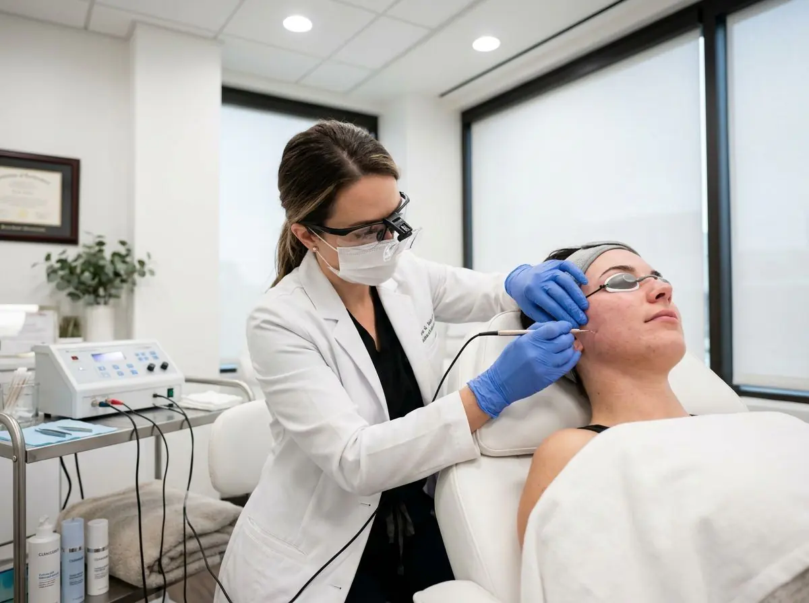
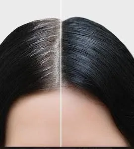
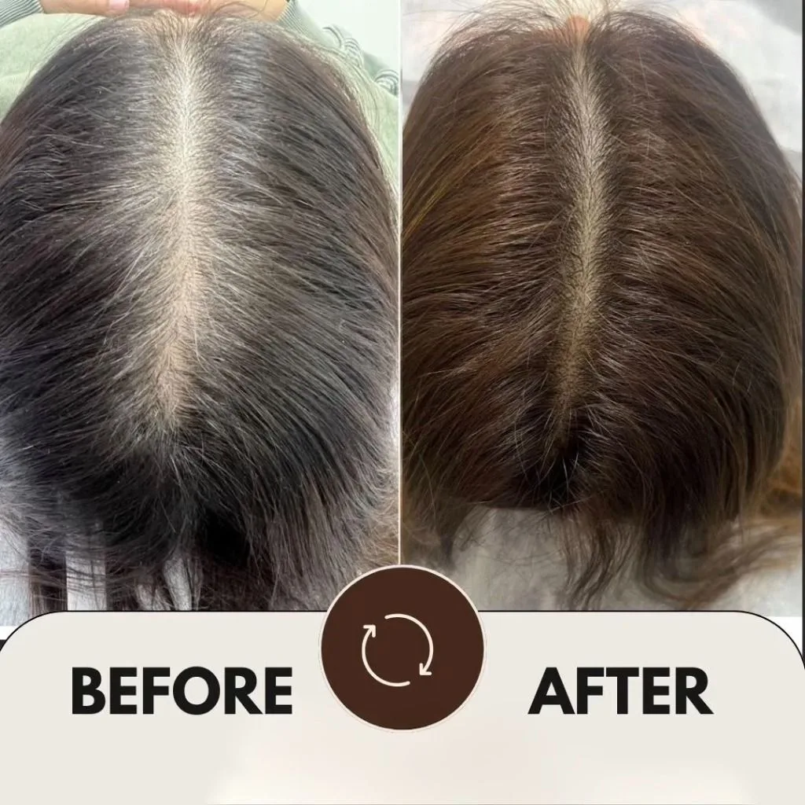

Further reading
- Why Laser Cannot Remove White Hair: Melanin Biology & Solutions
- Laser Hair Removal: How It Works, Technology & Session Timeline
Doctor-led follicle-by-follicle precision treatment delivering calibrated micro-current directly to the follicular germinal matrix. The only FDA-recognized method for permanent hair removal, clinically effective on laser-resistant white, grey, blonde, and fine hair across all skin types.

Conducted by certified medical epilators using stereomicroscopic precision and sterile single-use insulated micro-probes.
Engineered for patients where laser hair reduction reaches its biological limits.
The only method legally classified by the US FDA for permanent hair removal, halting regenerative germinal activity permanently.
Bypasses pigment entirely. Treats pure white, silver, grey, blonde, and fine vellus hair that lasers cannot absorb.
Delivers energy directly into the follicular dermal papilla, sparing surrounding healthy dermis from thermal injury.
Tailored treatment utilizing Galvanic, Thermolysis, or the Blend method based on follicle curvature, depth, and skin type.
Eliminates the risk of paradoxical hypertrichosis (stimulated finer hair growth often triggered by laser on facial zones).
Ideal for delicate areas including upper lip, chin, eyebrows, hairline, sideburns, neck, chest, and scattered stubborn follicles.
Micro-precision targeting suitable for small delicate patches or scattered resistant follicles.
Permanent clearance for chin, jawline, upper lip, sideburns, and neck, including hormonal hirsutism and PCOS hair patterns.
Unibrow separation, eyebrow arch definition, and clean forehead hairline contouring where laser optical beams cannot be safely applied.
The definitive finishing touch for stubborn white, grey, or fine hairs remaining after multiple laser hair reduction packages.
Targeted clearance for underarms, bikini line, areola/breasts, abdomen, fingers, and toes with individual follicle precision.
Understanding why electrolysis remains the clinical gold standard for complete permanent hair clearance.
Laser hair removal requires melanin pigment to absorb optical energy. White and grey hairs possess zero melanin, making electrolysis the only proven medical option.
Safe across the complete spectrum of Indian skin tones (Fitzpatrick IV–VI) without risk of surface hyperpigmentation, burns, or optical scattering.
Electrothermal and galvanic currents coagulate the germinative cells and follicular blood supply, preventing future hair formation permanently.
Treats isolated coarse stray hairs without heating or affecting surrounding delicate vellus hair, maintaining healthy skin integrity.
Ideal for women dealing with hormonal hirsutism from PCOS, PCOD, or thyroid fluctuations who experience recurring facial hair.
Once a follicle cycle is fully treated in its active growth phase, no lifelong maintenance shaving, threading, or waxing is necessary.
Three calibrated modalities deployed at Kezza Clinic based on hair thickness, root depth, and skin sensitivity.
Uses a continuous direct electrical current (DC) that reacts with moisture and sodium chloride in the follicle tissue to produce sodium hydroxide (lye), chemically destroying the germinative matrix.
Utilizes high-frequency alternating radiofrequency current (RF) to create rapid molecular vibration inside the follicle, generating localized electrocoagulation heat within milliseconds.
Simultaneously integrates Galvanic direct current with Thermolysis radiofrequency. The heat accelerates chemical lye activity, creating the highest follicle destruction rate with maximum patient comfort.
A clinical comparison of permanence, hair colour compatibility, and safety profile.
| Clinical Parameter | Medical Electrolysis | Laser Hair Reduction | Waxing & Threading |
|---|---|---|---|
| Permanence Level | Permanent (FDA Recognized) | Long-term reduction (melanin-dependent) | Temporary (regrowth in 2–4 weeks) |
| White, Grey & Blonde Hair | Proven Efficacy (All Colours) | Ineffective (zero melanin absorption) | Temporary pull only (regrows coarse) |
| Skin Tone Safety (Fitzpatrick I–VI) | Safe for All Skin Tones | Risk of burns/hyperpigmentation on deep skin | Risk of skin lifting and folliculitis |
| Treatment Precision | Follicle-by-Follicle Micro-Probe | Broad optical beam area coverage | Non-selective mechanical pulling |
| Follicle Germinal Matrix | Completely Coagulated | Temporarily miniaturized / weakened | Remains fully viable and undamaged |
| Paradoxical Stimulation Risk | No Growth Risk (Destroys Root) | Potential stimulation on fine facial hair | Can trigger increased blood supply to roots |
Our doctor-supervised 5-stage protocol ensures rigorous clinical hygiene and optimal patient comfort.
Trichoscopic assessment of hair thickness, root depth, growth phase, and skin sensitivity to customize modality settings.
An ultra-fine, sterile insulated probe is smoothly guided down the natural hair follicle canal without puncturing the skin.
A controlled pulse of electrothermal or blend current is delivered directly to the germinal matrix for a split second.
The treated hair is lifted out with sterile micro-forceps without any resistance or pulling sensation at the skin surface.
Application of cold compress, antibacterial soothing balm, and specialized post-epilation derm-care to minimize erythema.
Documented clinical outcomes of patients treated with precision electrolysis at Kezza Clinic.

Permanent clearance of stubborn hormonal chin and sideburn hair in a female patient with PCOS history. Follicles deactivated with zero pigmentation changes on Indian skin.

Complete permanent removal of scattered laser-resistant follicles and chronic ingrown hair prone zones, restoring clear, bump-free skin texture.
Hospital-grade hygiene, certified clinical specialists, and stereomicroscopic precision in Jaipur.
Treatment delivered by certified clinical epilation practitioners under dermatologist supervision with comprehensive anatomical expertise.
High-magnification surgical loupes ensure perfect micro-probe alignment with the follicle angle, preventing skin trauma or pitting.
Medical-grade, sterile, gold and stainless steel disposable probes with insulated shafts that protect surface epidermis from heat.
Strict Class-B autoclave sterilization, sterile barrier drapes, and single-use consumables for complete clinical safety.
Because hair follicles grow in cycles, complete permanent clearance is achieved across sequential visits.
Detailed consultation, skin type evaluation, and initial follicle clearance of active anagen hairs in the chosen zone. Mild transient redness subsides within hours.
Clearing emerging follicles that were dormant in telogen during your first visit and have now transitioned into an active growth stage.
Substantial thinning across the treated area. Any hairs that emerge are significantly finer, softer, and sparser than original growth.
Over 80% to 90% permanent reduction achieved. Session intervals stretch to several weeks apart for brief touch-up clearances.
Targeted follicles are permanently deactivated. Enjoy clear, smooth, hair-free skin without future shaving, plucking, or waxing.
Clear, doctor-backed answers to your questions about medical electrolysis in Jaipur.
Schedule a clinical consultation with our certified medical epilation team in Jaipur, Sikar, or Ajmer. Receive a comprehensive digital follicular assessment and customized treatment roadmap.
Direct doctor callback within 15 minutes during clinic hours